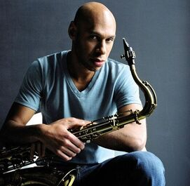

-
James DaughterVocalista
Canto no seu evento, seja qual for: casamentos, formaturas, festas de aniversários etc...
15 kmVer perfil -
Kevin GhostDJ
Precisa de um profissional de música ao vivo, para seu evento social ou corporativo? Eu tenho a solução!
25 kmVer perfil -

Arthur ItoSaxofonista
Saxofonista há 16 anos. Ampla experiência em Jazz, Blues, Axé, entre outros...
8 kmVer perfil -
Guilhermina PinkViolinista
Deixe seu evento com um ambiente mais agradável!
12 kmVer perfil -
Lorenza CorleoneVocalista
Mezzo-soprano. Faça com que a sua festa de casamento seja inesquecível!
2 kmVer perfil -
Ivan RitmoBaterista
Deixo qualquer festa mais animada!!.
22 kmVer perfil
 Home
Home
 Pesquisar
Pesquisar
 Ofertas
Ofertas
 Notificações
Notificações
 Perfil
Perfil
 Carregando...
Carregando...